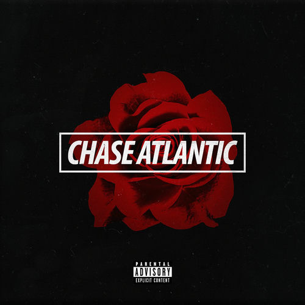

Chase Atlantic (2017)

Álbum del trío australiano Chase Atlantic
Año de lanzamiento:
2017
Temas principales: juventud, deseo y autodestrucción emocional.
Lista de canciones:
Swim
Into It
Friends
Okay
Volver a la discografía